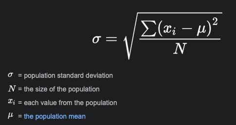

Programming C++ One Dimensional Array
In this lab, we will practice:
- Use one dimensional array to store information
- Pass one dimensional array to function as parameter
Copy the datafiles (lab8-1.dat and lab8-2.dat) into your lab 8 directory.
Write a C++ program, named "sdv.cpp", that reads the values from a data file, display the values, and computes and displays the mean and standard deviation of these values.
For this program, you are reqired to write two user defined functions:
- Function ComputeMean: this function computes the mean of the values stored in an array. It should be a value returning function. It returns the mean value. The array and the number of items in the array are passed into this function as parameters;
- Function ComputeSdv: this function computes the standard deviation of the values stored in an array.
The formula for computing standard deviation is shown below.

Here is an example run of the program when the data file to be opened is specified using the statement:
Sample run 1
Enter the data file name: lab8-1.dat
The values read are:
30
-40
25
64
89
103
45
89
34
-2
15
63
The mean is 42.92.
The standard deviation is 39.74.
Sample run 2
Enter the data file name: lab8-2.dat
The values read are:
500
430
240
-390
-230
100
394
444
882
-30
-29
683
732
990
-538
93
The mean is 266.94.
The standard deviation is 431.56.
What to Submit?
For this lab, submit the file: sdv.cpp only.